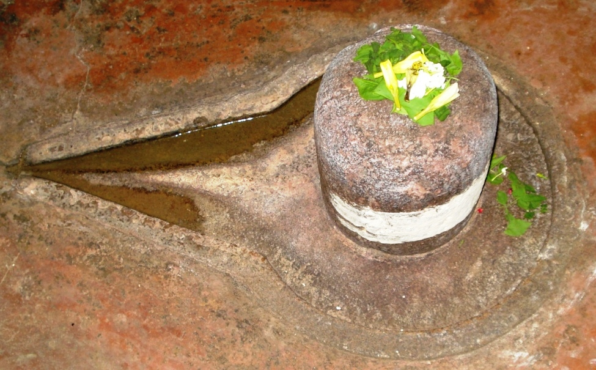

<?xml version="1.0" encoding="UTF-8"?><rss version="2.0"
	xmlns:content="http://purl.org/rss/1.0/modules/content/"
	xmlns:wfw="http://wellformedweb.org/CommentAPI/"
	xmlns:dc="http://purl.org/dc/elements/1.1/"
	xmlns:atom="http://www.w3.org/2005/Atom"
	xmlns:sy="http://purl.org/rss/1.0/modules/syndication/"
	xmlns:slash="http://purl.org/rss/1.0/modules/slash/"
	>

<channel>
	<title>Kshemeshwar &#8211; Varanasi Temples</title>
	<atom:link href="index.html" rel="self" type="application/rss+xml" />
	<link>../../../../../index.html</link>
	<description>Temples of Varanasi as referred to in Kashi Khand</description>
	<lastBuildDate>Thu, 19 Jun 2025 05:16:46 +0000</lastBuildDate>
	<language>en-US</language>
	<sy:updatePeriod>hourly</sy:updatePeriod>
	<sy:updateFrequency>1</sy:updateFrequency>
	<generator>https://wordpress.org/?v=4.6.29</generator>
	<item>
		<title>KSHEMESHWAR</title>
		<link>../../../../../shiva-temples/kshemeshwar/index.html</link>
		<pubDate>Sun, 09 May 2010 09:01:03 +0000</pubDate>
		<dc:creator><![CDATA[admin]]></dc:creator>
				<category><![CDATA[Kshemeshwar]]></category>
		<category><![CDATA[Other Shiva Temples (E-K)]]></category>
		<category><![CDATA[Shiva Temples]]></category>
		<category><![CDATA[kedar]]></category>
		<category><![CDATA[kedar ghat]]></category>

		<guid isPermaLink="false">../../../../../p=299.html</guid>
		<description><![CDATA[After the first few batches of Shiv Gans sent to Kashi failed to return, Lord Shiva sent a few more batches of Shiv Gans from Mandarachal to Kashi.  (Regarding deputation of Shiv Gans to Kashi, devotees are requested to refer to Kukkuteshwar Ling). (KSHEMESHWAR) These Shiv Gans also decided to settle down in Kashi and [&#8230;]]]></description>
				<content:encoded><![CDATA[<p>After the first few batches of Shiv Gans sent to Kashi failed to return, Lord Shiva sent a few more batches of Shiv Gans from Mandarachal to Kashi.  (Regarding deputation of Shiv Gans to Kashi, devotees are requested to refer to Kukkuteshwar Ling).</p>
<p></p>
<p style="text-align: center;"><strong>(KSHEMESHWAR)</strong></p>
<p>These Shiv Gans also decided to settle down in Kashi and they installed Shiv Lings which came to be known after  their names. One Shiv Gan named Kshemak installed a Shiv Ling and started worshipping Lord Shiva.  This Ling came to be known as Kshemeshwar.  Kashi Khand, Chapter 55 states that a devotee who worships Kshemeshwar is cleansed of all his sins and will attain happiness and prosperity.</p>
<p><strong><span style="text-decoration: underline;">LOCATION OF KSHEMESHWAR</span></strong></p>
<p>Kshemeshwar is located at Kshemeshwar Ghat at House No. B-14/14, Manasarovar Ghat.  People can travel upto Kedarghat by rickshaw and walk on foot upto Kedarghat Post Office and take a right turn towards Kshemeshwar Ghat.  The Ling is located in a house belonging to Kumaraswamy Mutt of Kedar Ghat.</p>
<p><strong><span style="text-decoration: underline;">TYPE OF POOJA</span></strong></p>
<p>Devotees can worship the Kshemeshwar Ling through the Grill gate.</p>
]]></content:encoded>
			</item>
	</channel>
</rss>
